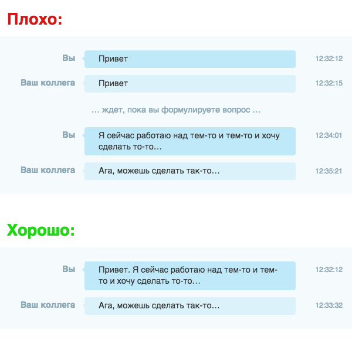

В
чате
вы можете спокойно обсудить любые темы, касающиеся работы в программах After
Effects и Premiere Pro. Также вы можете спокойно предложить свою работу или
вакансию хештегом
#работа
Прежде чем рассказать о проблеме - нажимайте на галочку рядом с пунктом
"сжать изображение"
при загрузке фото, не делайте фото/видео монитора на телефон (используйте кнопку
для скриншота или запись экрана) и опишите проблему текстом, а не голосом. За
игнорирование этого пункта - возможен мут.
Не помешало объяснить при описании проблемы характеристики вашей компьютера,
версию конкретной программы и откуда оно установлено, на каком диске стоит и что
вы делали до вашей ошибки. Напомню, что на большинство ошибок уже даны ответы как
в интернете, так и в чате и FAQ.
Dear English-speaking colleagues, the chat uses
only Russian
. Use a translator from your language to Russian, or don't create problems for
others. Thank you.
Правила AEChat
Администраторы чата никому и ничего не обязаны.
Администраторы чата ничем не обязаны и не являются техподдержкой, упоминать их
через @ лишний раз не стоит, бот вас накажет. Также не стоит задавать им свои
вопросы в личные сообщения, НЕ касающихся работы данного
чата, каналов
AETemp,
Design World
и бота
HiStock
- это плохой тон.
Незнание правил не освобождает от ответственности. Убедитесь в том, что на ваш
вопрос уже был дан ответ (вы можете воспользоваться поиском по чату, каналам или с
помощью поисковиков).
Плохое поведение.
Запрещён спам, чрезмерное употребление матов, флуд (отход от темы, вопросы не по
продуктам Adobe или много бессмысленных сообщений, для этого есть флудилка),
мета-вопросы*, оскорбление других пользователей, упоминание родных, чрезмерная
токсичность и "твинководство", если вы обиделись на бан или мут основного
аккаунта.
Мета-вопросы.
Пожалуйста, не задавайте вопросы, например как:
"Можно пару вопросов?",
"Столкнулась с проблемой, может ли кто-то помочь разобраться?" ,
"Кто-то знаком с Program_Name?",
"Есть тут специалисты по Program_Name?",
"Нужна помощь, напишите в личные сообщения",
"Сложно описать вопрос, помогите",
"Ау, чё не отвечаете?"
и так далее. Эти вопросы не несут никакой ценности для остальных пользователей,
так как нет конкретного вопроса.
ПИШИТЕ СВОЙ ВОПРОС СРАЗУ В ЧАТ, НЕ РАЗДЕЛЯЯ НА МНОЖЕСТВО СООБЩЕНИЙ, А ТАКЖЕ НЕ
ЗОВИТЕ ЛЮДЕЙ В ЛИЧНЫЕ СООБЩЕНИЯ. Иначе н&#%я вы сюда пришли?
Метавопросы могут быть бесполезными, поскольку они отвлекают от основной темы,
неэффективно используют время, а также могут негативно повлиять на общение между
участниками чата. Подробнее, пожалуйста, прочитайте на
nometa.xyz. Если вы всё ещё не понимаете суть мета-вопросов, то администрация оставляет за
собой право замутить вас для изучения проблемы формулирования вопроса.

Суть одной картинкой.
Никакой политики, порнухи и шокирующего контента.
Строго запрещены политика и любые около-политические темы, а также любая
порнография и NSFW-контент вне зависимости от контекста. Под это попадают
провокационные ники и аватарки.
Никаких барыг, попрошаек и рекламодателей.
Запрещена купля, продажа и перепродажа товаров, шаблонов, «доступов», а также
самопиар своей страницы в соцсетях, реферальные ссылки и реклама без разрешения
администрации.
Ссылки на другие каналы в Telegram с плагинами/программами/шаблонами/курсами или
чаты категорически не приветствуются.
Вы можете поделиться ссылкой на полезный ресурс (например:
ezgif.com,
en.likefont.com,
convertio.co
или туториалы по эффектам на YouTube) или шаблон в виде файла.
Не по теме чата
Почему я тегнул через @ одного из администраторов, а моё сообщение удалили?
Причина в том, что бот реагирует на упоминание пользователей. Не всем
администраторам и участникам чата нравится упоминание без веской причины, особенно
в контексте вопросов вроде "@username, ты знаешь ответ?" и подобных. В случае
возникновения проблем в чате, вы можете использовать команду /report в ответ на
соответствующее сообщение.
Что делать, если захочу спросить про Blender, Cinema 4D и другим продуктами не
относящееся к Adobe?
На
главной странице
нашего сайта есть список различных чатов и каналов, которые могут быть вам
полезны, если вы не умеете пользоваться поиском по Telegram и интернету.
Может всё-таки уберёте таймер на сообщения в чате? Ну пожалуйста...
Пока люди не освоят навык структурирования своих мыслей и выражения их в форме
единого сообщения, возможно, возникнут сложности в эффективном обмене информацией
и общении в чате, поэтому и введены небольшие ограничения по времени.